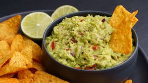

Guacamole

A fresh and zesty dip perfect for tortilla chips or taco toppings. No cooking required!
Ingredients
- 2 ripe avocados
- 1 tbsp lime juice
- 1/2 tsp salt
- 2 tbsp chopped cilantro (optional)
Steps
- Cut the avocados in half, remove the pit, and scoop the flesh into a bowl.
- Mash the avocado with a fork until it reaches your desired chunkiness.
- Stir in the lime juice, salt, and cilantro.
- Taste and add more salt if needed.
Home